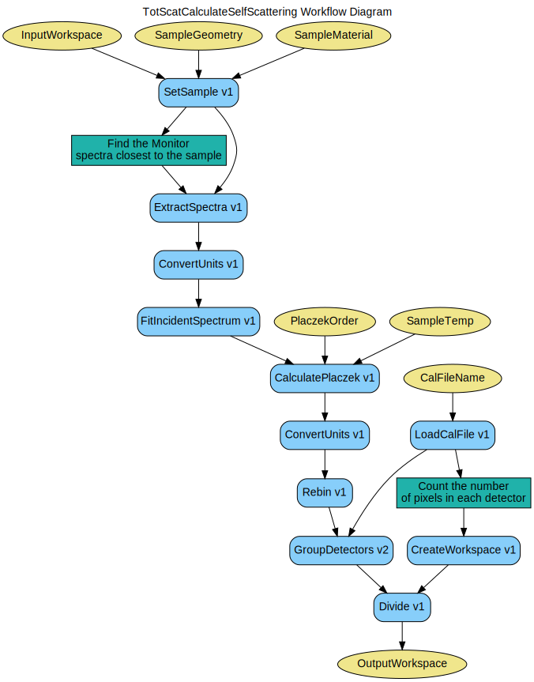

\(\renewcommand\AA{\unicode{x212B}}\)
TotScatCalculateSelfScattering v1¶
{kind=link}
TotScatCalculateSelfScattering dialog.¶
Summary¶
Calculates the self scattering correction factor for total scattering data.
Properties¶
Name |
Direction |
Type |
Default |
Description |
|---|---|---|---|---|
InputWorkspace |
Input |
Mandatory |
Raw workspace. |
|
OutputWorkspace |
Output |
Mandatory |
Focused corrected workspace. |
|
CalFileName |
Input |
string |
Mandatory |
File path for the instrument calibration file. |
SampleGeometry |
Input |
Dictionary |
null |
Geometry of the sample material. |
SampleMaterial |
Input |
Dictionary |
null |
Chemical formula for the sample material. |
PlaczekOrder |
Input |
number |
1 |
Placzek correction order to be used. |
SampleTemp |
Input |
string |
Sample Temperature in Kelvin. Required for 2nd order Placzek correction if not using Sample Logs. |
Description¶
This is a workflow algorithm that calculates the placzek self scattering factor focused into detector banks. This is done by executing several sub-algorithms as listed below.
SetSample v1 Sets sample data for the run that is to be corrected to the raw workspace.
ExtractSpectra v1 Extracts the monitor spectrum closest to the sample (incident spectrum).
ConvertUnits v1 Converts incident spectrum to wavelength.
FitIncidentSpectrum v1 Fit a curve to the incident spectrum.
CalculatePlaczek v1 Calculate the Placzek self scattering factor for each pixel.
ConvertUnits v1 Convert the Placzek correction into MomentumTransfer
Rebin v1 Rebin correction before GroupDetectors.
LoadCalFile v1 Loads the detector calibration.
GroupDetectors v2 Group the Placzek self scattering factor into detector banks.
CreateWorkspace v1 Create a workspace containing the number of pixels in each detector bank.
Divide v1 Normalize the Placzek correction by pixel number in bank
Workflow¶
Categories: AlgorithmIndex | Workflow\Diffraction